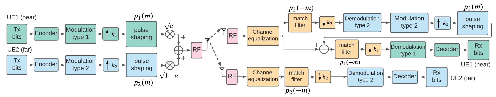
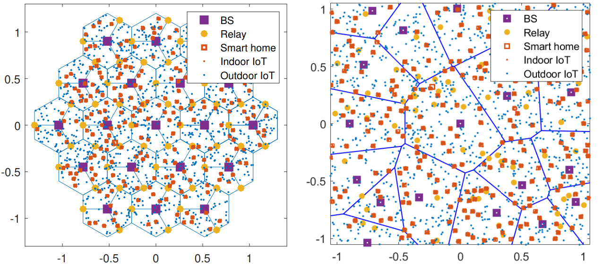

Research
Research motivations
The future of next-generation wireless technology is to realize the ultrafast speed, greater capacity, reliable security, and ultra-low latency to support unlimited wireless connectivity in verities of new applications such as the Internet of things (IoT), wearables, aerial vehicles, etc. To fulfill the demands of the beyond fifth-generation (5G) and sixth generation (6G), my research interests lie in the realization of prolific transmission functions in wireless communication systems, including increasing data rates, improving physical layer security (PLS), realizing efficient resource utilization and green communication, etc.
Research Interests
|
Higher data rates transmission
Wireless Non-orthogonal Multiple Access Implementation
To fulfill the requirement for massive connections with varying throughput requirements, 5G and beyond networks are currently evolving in design philosophy: shifting from orthogonal to non-orthogonal architecture. Thus, the non-orthogonal multiple access (NOMA) technique has been a promising solution to increase the number of users in the same resource and enhance spectral efficiency. NOMA can be flexibly combined with multiple-input, multiple-output (MIMO) systems, the preceding design, then, can exploit the spatial multiplexing gain to reach higher data rates. We have designed a rotation-based parameterized precoding for integrated services in which multiple services are merged in one transmission. The proposed random rotating parameter generation algorithm is implementation efficiency. We improved the spectral utilization by sharing the spectrum between multiple users with multiple messages. In addition, to bridge the gap between theory and practice and bring NOMA to practical communication systems, we design and implement NOMA in software-defined radio wireless testbed, i.e., NI USRP-2974 to check its spectral efficiency in practice. Experimental results in a real-world building environment show that NOMA can improve spectral efficiency.
|  |
Stronger security transmission
Physical Layer Security in NOMA Networks
Physical layer security has been introduced as additional protection for secure transmission. It can guarantee information secrecy regardless of an eavesdropper’s computational capability. We developed optimal precoding and power allocation schemes for secure transmission over wiretap channel, in which two users can realize reliable and confidential transmission in the presence of one eavesdropper. We design a linear precoding technique to ensure the confidentiality of the message of NOMA users from its counterpart. The proposed method substantially enlarges the secrecy rate compared to existing linear precoding methods and strikes a balance between performance and computation cost. We consider the signaling design for MIMO NOMA with different security requirements. We derive and generalize an iterative algorithm.
Green communication
IoT Battery Lifetime Enhancement
Green communication aims to reduce energy consumption and achieve economical and environmental communications. In massive IoT networks running on batteries, reducing the energy consumption of billions of IoT sensors becomes a big challenge. We model and analyze the battery lifetime in large-scale networks and propose relay deployment strategies for IoT battery longevity and analyze it in large scales.
|  |
Spectrum analysis
Civil Aviation Meteorological Radar Signal Identification
The generic goal of signal analysis and spectrum sensing is to understand the electromagnetic environment and identify the spectrum occupied by one signal, then the system can perform signal processing, classification, recognition, resource allocation, etc. We promote the time-frequency concentration and noise suppuration using S-transform for non-stationary signal processing such as radar signals, monitoring data of IoT sensors in Yang Mausoleum, and characterize the Gaussian white noise properties and phase hopping estimation, respectively. To better classify and recognize the civil aviation signals, we proposed one feature extraction method to improve the feature expression and the recognition rate by using compressed sensing optimization. We also use a deep neural network for modulation classification which can maintain a high accuracy even under a low SNR scenario.
 |